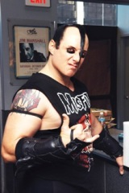
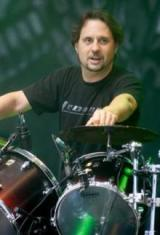
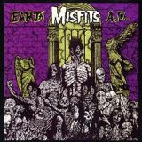
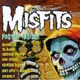
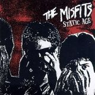
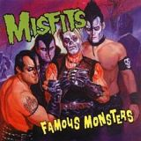
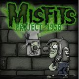
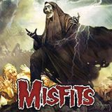

Misfits - Biografia
Feito por: Jefferson Silva
Contéudo:
História da banda(fonte:Wikipédia)

Misfits é uma banda que foi formada por Glenn Danzig em 1977 na cidade de Lodi, Nova Jérsei.
Foram os criadores do horror punk, um sub gênero do punk rock, a banda já vendeu mais de 5 milhões de cópias,
além de exercer influência em diversas outras bandas de rock e metal em geral,
em 1983 Danzig resolve encerrar os Misfits em desentendimentos com o
baixista Jerry Only, para formar um novo projeto, iniciando novas atividades.
De 84 a 94 durante 10 anos os Misfits ficaram parados musicalmente ate voltarem a
ativa no ano seguinte.
Em 1995 Michale Graves assumiu os vocais até sua saída em 2000 junto com o baterista DR.
CHUD. Em 2001 Doyle também deixa o grupo, pelo fato de que Jerry queria ter assumido os vocais,
trazer novos compositores e integrantes, não sentir interesse em gravar um novo material,
querendo fazer dos Misfits uma banda cover solo de si mesma
(segundo relatou Doyle, Graves e Chud em entrevistas ao longo dos anos).
A partir deste ponto em diante Jerry continua com o nome The Misfits,
porém a banda havia acabado oficialmente naquele ano.
Integrantes:
Integrantes do Misfits
| Foto |
Nome |
Data de nascimento |
Instrumento |
|
Glenn Danzig |
22/06/1955 |
Vocais, baixo, guitarra, bateria, teclados |
|  |
Jerry Only |
21/04/1959 |
Baixo, vocais, guitarra |
|
Doyle Wolfgang von Frankenstein |
15/09/1964 |
Guitarra |
|  |
David "Dave" Lombardo |
16/02/1965 |
Bateria |
Discografia:
Discografia do Misfits
| Capa |
nome |
Ano de lançamento |
 |
Walk among us |
1982 |
|  |
Earth AD / Wolfs Blood |
1983 |
|  |
American Psycho |
1997 |
|  |
Static age |
1997 |
|  |
Famous Monsters |
1999 |
|  |
Project 1950 |
2003 |
|  |
The Devil's Rain |
2011 |
Autor: Jefferson Silva dos Santos - 2017